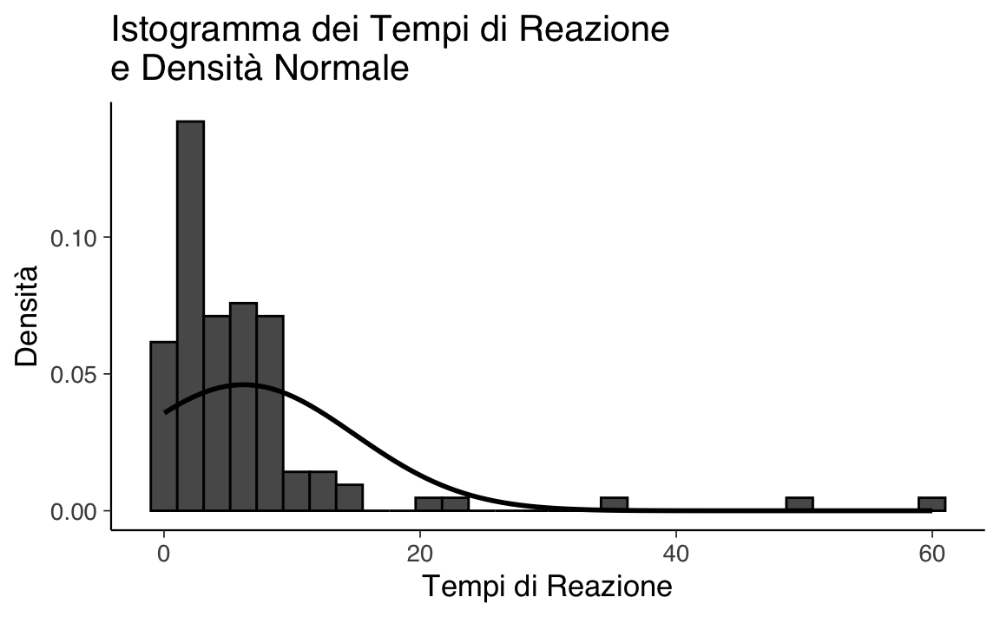
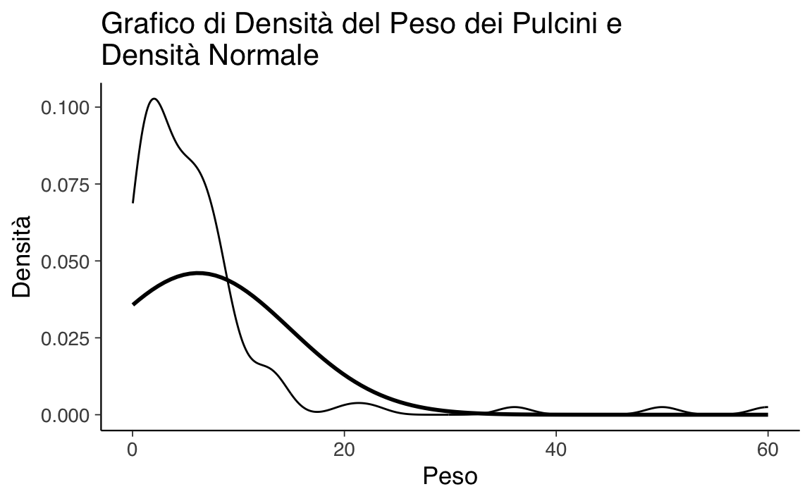
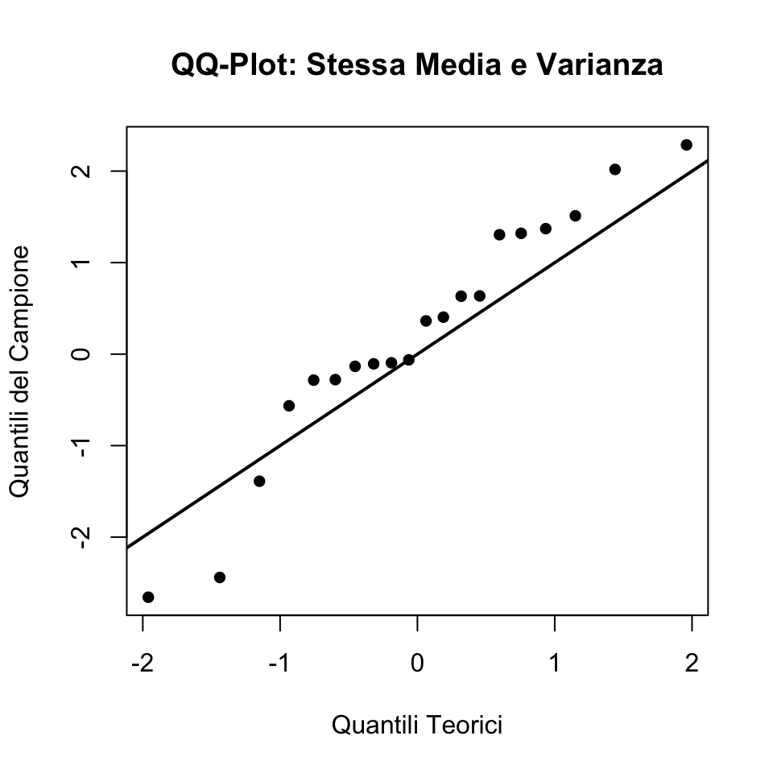
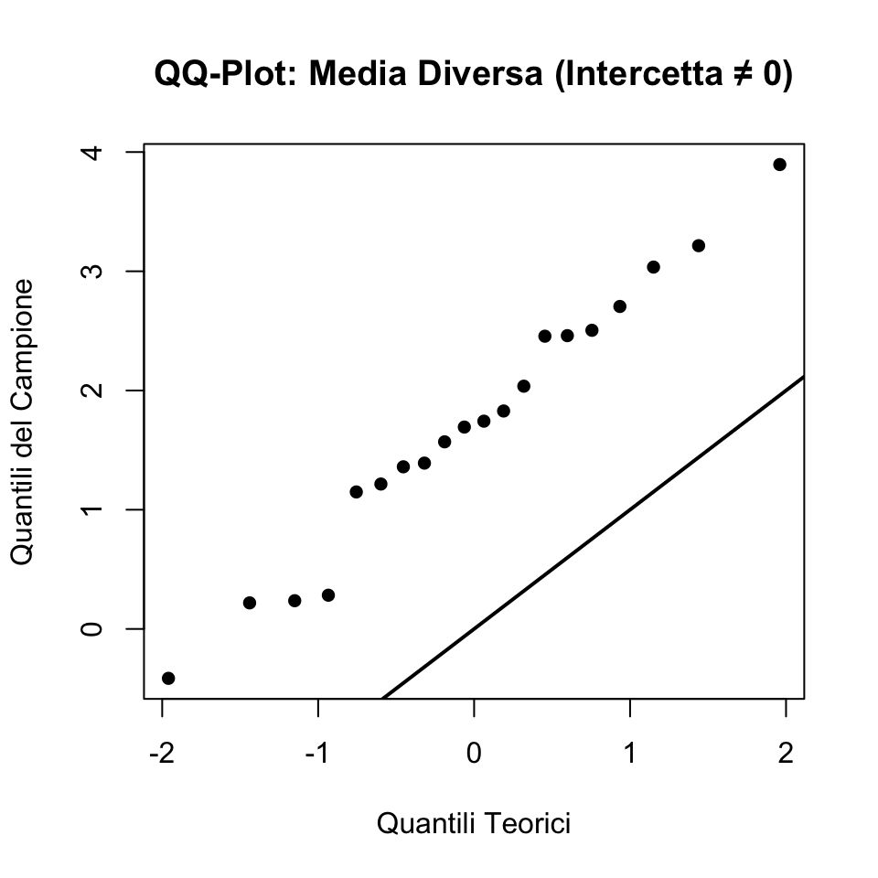
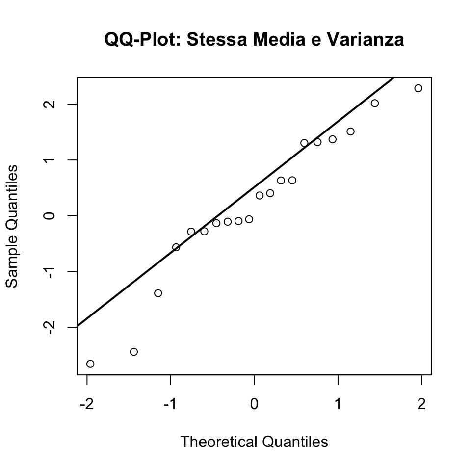
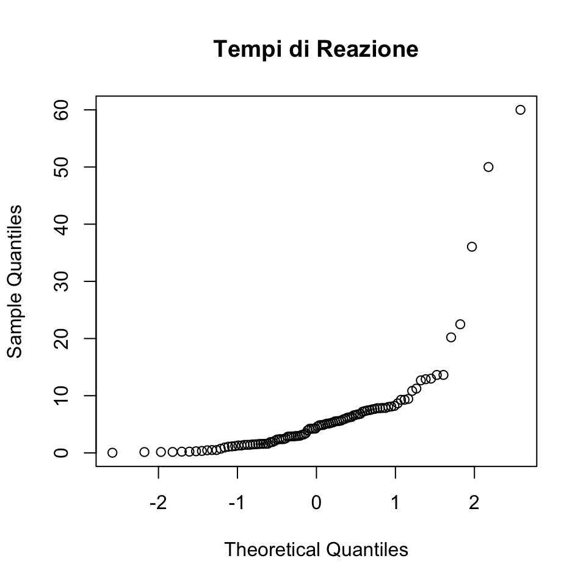
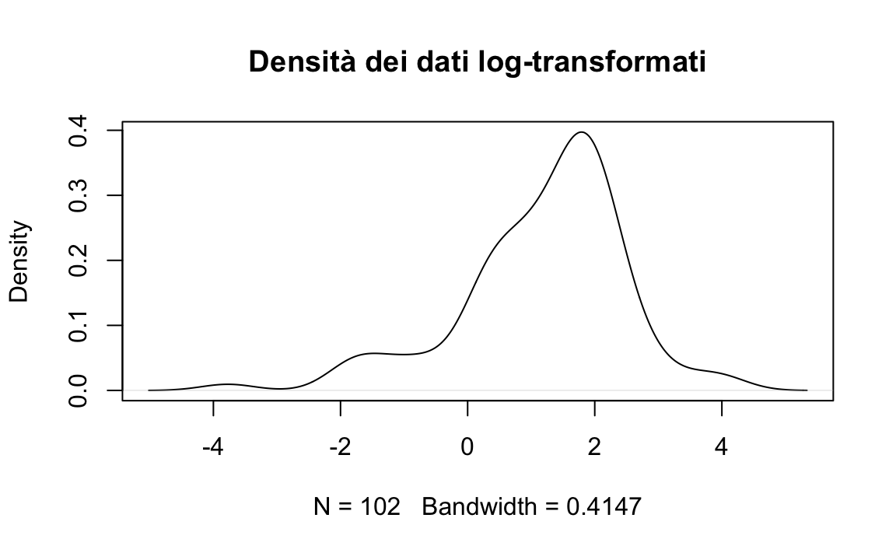
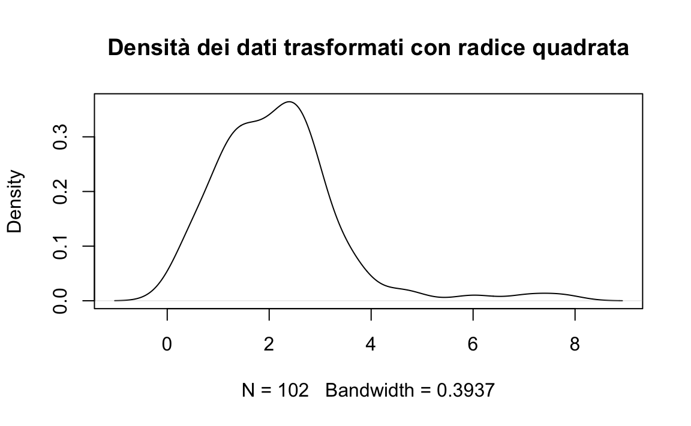
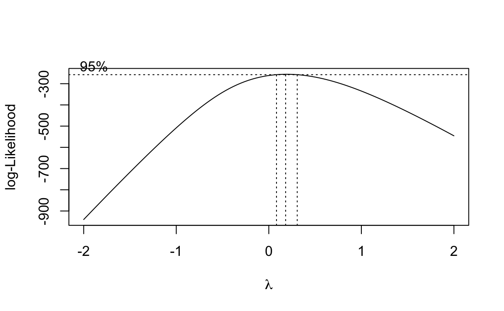
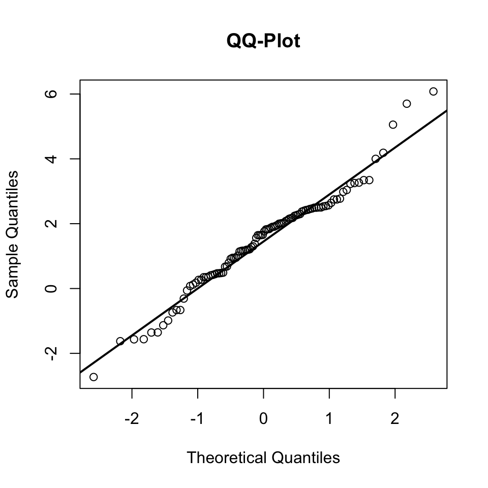

here::here("code", "_common.R") |>
source()
# Load packages
if (!requireNamespace("pacman")) install.packages("pacman")
pacman::p_load(datawizard, MASS)36 Assunzione di gaussianità e trasformazioni dei dati
In questo capitolo imparerai a
- valutare la normalità dei dati usando metodi grafici e statistici;
- applicare trasformazioni per normalizzare i dati.
Prerequisiti
- Leggere “Assumption-checking rather than (just) testing: The importance of visualization and effect size in statistical diagnostics” (Shatz, 2024).
Preparazione del Notebook
36.1 Introduzione
Nell’analisi dei dati numerici, un aspetto cruciale da affrontare è l’imprecisione delle misurazioni, una caratteristica intrinseca dei dati reali. Anche in condizioni ottimali, le misure sono soggette a incertezze: i dati rappresentano sempre una stima approssimativa della realtà, accurata solo entro un certo margine (ad esempio, pochi punti percentuali). Inoltre, in molti contesti, come quelli demografici, commerciali o sociali, i dati possono essere arrotondati intenzionalmente o risultare imprecisi a causa di stime indirette, incompletezza delle informazioni o altri fattori.
Riconoscere e gestire questa incertezza è una componente essenziale del processo analitico. Gli strumenti statistici forniscono un framework formale per descrivere e quantificare l’incertezza, consentendo di trarre inferenze robuste dai dati. Tra le distribuzioni di probabilità, la distribuzione normale (o gaussiana) occupa un posto centrale per la sua ubiquità e versatilità. Spesso rappresentata dalla caratteristica “curva a campana,” questa distribuzione è utilizzata per descrivere molte variabili naturali. Quando i dati approssimano una distribuzione normale, gran parte dei valori si concentra intorno alla media, con una diminuzione progressiva della probabilità di valori estremi.
Una delle proprietà più utili della distribuzione normale è la possibilità di esprimere affermazioni quantitative rigorose. Ad esempio, si può calcolare la probabilità che un valore cada entro un determinato intervallo dalla media utilizzando parametri semplici come media (\(\mu\)) e deviazione standard (\(\sigma\)):
- Circa il 68.3% dei valori cade entro una deviazione standard dalla media:
- Circa il 99.7% cade entro tre deviazioni standard:
Questi calcoli costituiscono la base della “regola delle tre sigma,” una strategia utilizzata per identificare valori anomali (outlier), come discusso nel Capitolo 23. Tuttavia, tale regola può risultare fuorviante se i dati non seguono effettivamente una distribuzione normale.
La densità della distribuzione normale è definita dalla formula:
\[ p(x) = \frac{1}{\sqrt{2\pi}\,\sigma} \exp\left(-\frac{(x-\mu)^2}{2\sigma^2}\right), \]
dove \(\mu\) rappresenta la media e \(\sigma\) la deviazione standard. Conoscere questi due parametri permette di calcolare proprietà fondamentali della distribuzione e di stimare probabilità associate a intervalli specifici.
36.1.1 Gaussianità e Inferenza Statistica
La distribuzione normale è particolarmente rilevante per molti metodi statistici, in particolare nell’approccio frequentista. Gran parte dei test di ipotesi e delle procedure inferenziali assume che i dati siano distribuiti normalmente, una condizione necessaria per derivare formalmente i risultati di molti test. Ad esempio, i test t di Student e l’ANOVA richiedono la normalità delle variabili o dei residui. Quando questa assunzione è soddisfatta, tali strumenti offrono inferenze precise e affidabili.
Tuttavia, se i dati non sono gaussiani, molti test perdono validità. Sebbene si siano proposti approcci che dimostrano la robustezza di alcuni test a deviazioni moderate dalla normalità (Shatz, 2024), tale robustezza non è garantita in tutte le situazioni. Inoltre, l’enfasi sui valori-p complica la questione, poiché violazioni dell’assunzione di normalità possono compromettere l’interpretazione di questi indicatori.
Una strategia comune per affrontare la non-gaussianità è l’applicazione di trasformazioni dei dati, come la trasformazione logaritmica o quella della radice quadrata, per avvicinare i dati alla distribuzione normale (Osborne, 2002). Ad esempio, distribuzioni asimmetriche come quelle dei tempi di reazione possono essere rese più gaussiane attraverso trasformazioni adeguate, rendendo applicabili i test frequentisti standard. Tuttavia, l’uso delle trasformazioni ha un costo: la perdita di interpretabilità. Se i dati originali avevano un significato chiaro e intuitivo, la trasformazione può rendere i risultati più difficili da collegare al fenomeno studiato.
In questo capitolo, esploreremo come verificare se i dati seguono una distribuzione normale, discuteremo l’impatto di questa assunzione sui metodi frequentisti e valuteremo il ruolo delle trasformazioni. Il nostro obiettivo è fornire al data analyst una guida pratica per decidere come trattare i dati non gaussiani, considerando sia i vantaggi che i limiti di ciascun approccio.
36.1.2 L’assunzione di Gaussianità: Quando è valida?
Sebbene la distribuzione normale sia spesso un buon modello per i dati numerici, non è sempre una rappresentazione adeguata. Questo può dipendere da caratteristiche intrinseche dei dati, come asimmetrie, code lunghe o la presenza di valori anomali. Valutare l’appropriatezza dell’assunzione di normalità è un passaggio critico in qualsiasi analisi statistica.
Per diagnosticare la normalità, presenteremo tre strumenti grafici:
- Istogrammi, una visualizzazione semplice ma spesso limitata.
- Grafici di densità, che forniscono un confronto più fluido rispetto agli istogrammi.
- QQ-plot (Quantile-Quantile plot), uno strumento visivo particolarmente efficace per rilevare deviazioni dalla normalità.
Questi strumenti possono anche essere affiancati da test formali per consentire una diagnosi robusta e guidare le decisioni sul trattamento dei dati.
36.2 Istogramma
Per illustrare il concetto, utilizziamo un set di dati simulati che hanno proprietà simili a quelle dei tempi di reazione. Creeremo un istogramma e vi sovrapporremo la curva di densità normale calcolata in base ai dati.
# Dati simulati di tempi di reazione
set.seed(123)
rt <- c(rexp(100, rate = 0.2), 50, 60) # Aggiunti valori estremi
# Calcolare la media e la deviazione standard per sovrapporre la densità normale
mean_rt <- mean(rt, na.rm = TRUE)
sd_rt <- sd(rt, na.rm = TRUE)
# Creare l'istogramma e sovrapporre la densità normale
ggplot(tibble(rt=rt), aes(x = rt)) +
geom_histogram(
aes(y = ..density..),
bins = 30, color = "black"
) +
stat_function(
fun = dnorm,
args = list(mean = mean_rt, sd = sd_rt),
size = 1
) +
labs(
title = "Istogramma dei Tempi di Reazione\ne Densità Normale",
x = "Tempi di Reazione",
y = "Densità"
)
#> Warning: Using `size` aesthetic for lines was deprecated in ggplot2 3.4.0.
#> ℹ Please use `linewidth` instead.
#> Warning: The dot-dot notation (`..density..`) was deprecated in ggplot2 3.4.0.
#> ℹ Please use `after_stat(density)` instead.
L’istogramma mostra la distribuzione empirica dei dati, mentre la curva rossa rappresenta la densità normale con la stessa media e deviazione standard. Nel nostro caso, è evidente una discrepanza tra la distribuzione empirica e la densità normale, indicando che l’assunzione di normalità non è appropriata.
36.3 Grafico di densità
Un grafico di densità è una versione lisciata dell’istogramma che facilita il confronto con la distribuzione normale. Utilizzando il dataset precedente, possiamo creare un grafico di densità sovrapposto alla curva gaussiana.
ggplot(tibble(rt=rt), aes(x = rt)) +
geom_density(alpha = 0.5) +
stat_function(
fun = dnorm,
args = list(mean = mean_rt, sd = sd_rt),
size = 1
) +
labs(
title = "Grafico di Densità del Peso dei Pulcini e\nDensità Normale",
x = "Peso",
y = "Densità"
)
Anche questa rappresentazione rende chiaro come l’assunzione di normalità non sia appropriata.
36.4 Diagramma quantile-quantile
Il diagramma quantile-quantile (QQ-plot) è lo strumento più utile per analizzare visivamente la conformità di un dataset a una distribuzione teorica, in particolare alla distribuzione normale. Il QQ-plot è una tecnica essenziale per chi lavora con dati che si presume seguano una distribuzione specifica, e rappresenta un passaggio cruciale in molte analisi statistiche, soprattutto per verificare l’assunto di normalità.
Un QQ-plot permette di:
- Valutare graficamente la normalità dei dati: Se i punti nel diagramma seguono approssimativamente una linea retta, i dati possono essere considerati normalmente distribuiti. In caso contrario, il QQ-plot rivela deviazioni dalla normalità, come code pesanti o asimmetrie.
- Confrontare distribuzioni: Il QQ-plot non si limita solo alla distribuzione normale, ma può essere utilizzato per confrontare la distribuzione del campione con qualsiasi distribuzione teorica, facilitando l’analisi di dati con forme di distribuzione complesse.
- Identificare outlier: Gli outlier nei dati saranno visibili come punti che si discostano significativamente dalla linea retta del QQ-plot.
Il QQ-plot è costruito tracciando i quantili del campione contro i quantili teorici di una distribuzione di riferimento. L’interpretazione è piuttosto semplice:
- Se il campione segue la distribuzione teorica, i punti nel QQ-plot si allineano lungo una linea retta di pendenza 1 (e intercetta 0 nel caso di distribuzione normale standardizzata).
- La deviazione dalla linea retta indica differenze nella distribuzione del campione rispetto alla distribuzione teorica:
- Intercetta diversa da 0: indica che la media del campione differisce dalla media della distribuzione teorica.
- Pendenza diversa da 1: indica una differenza nella varianza tra il campione e la distribuzione teorica.
- Curve: indicano deviazioni sistematiche, come code pesanti o distribuzioni asimmetriche.
Nella discussione seguente, costruiremo e analizzeremo QQ-plot per tre casi tipici:
- Campione con stessa media e varianza della distribuzione teorica.
- Campione con media diversa ma stessa varianza.
- Campione con media e varianza diverse.
Simuleremo i dati, li ordineremo, calcoleremo manualmente i quantili teorici e infine utilizzeremo librerie specializzate per replicare e confrontare i risultati. Questo approccio pratico ci permetterà di comprendere a fondo l’utilità e il funzionamento del QQ-plot.
36.4.1 Comprendere e Costruire un QQ-Plot (Distribuzione Normale)
Un QQ-plot (Quantile-Quantile plot) è uno strumento grafico utilizzato per confrontare la distribuzione di un campione con una distribuzione teorica, spesso la distribuzione normale. Il QQ-plot aiuta a visualizzare se un dataset segue una distribuzione specifica, tracciando i quantili del campione contro i quantili della distribuzione teorica.
36.4.2 Passi per Costruire un QQ-Plot
- Ordinare i Dati: Disporre i dati del campione in ordine crescente.
- Determinare i Quantili Teorici: Per una distribuzione normale, i quantili corrispondono all’inverso della funzione di distribuzione cumulativa (CDF) della distribuzione normale.
- Confrontare i Quantili: Tracciare i quantili del campione rispetto ai quantili della distribuzione teorica. Se il campione proviene dalla distribuzione teorica, i punti dovrebbero trovarsi approssimativamente su una linea retta.
36.4.3 Caso 1: Campione con Stessa Media e Varianza della Distribuzione Normale
Supponiamo che il campione provenga da una distribuzione normale \(N(\mu = 0, \sigma^2 = 1)\), esattamente come la distribuzione teorica.
36.4.3.1 Simulazione dei Dati
Iniziamo simulando un piccolo dataset da \(N(0, 1)\):
# Generiamo 20 punti dati da N(0, 1)
set.seed(42) # Per garantire la riproducibilità
dati_campione <- rnorm(20, mean = 0, sd = 1)
# Ordiniamo i dati del campione
campione_ordinato <- sort(dati_campione)
# Calcoliamo i quantili teorici da N(0, 1)
quantili_teorici <- qnorm((seq(1, 20) - 0.5) / 20)
# Tracciamo il QQ-plot
plot(quantili_teorici, campione_ordinato,
xlab = "Quantili Teorici", ylab = "Quantili del Campione",
main = "QQ-Plot: Stessa Media e Varianza", pch = 16)
abline(0, 1, lwd = 2) # Linea y = x
In questo caso, i punti del QQ-plot dovrebbero allinearsi alla linea rossa, indicando che la distribuzione del campione corrisponde a quella teorica.
36.4.4 Caso 2: Campione con Media Diversa (Intercetta ≠ 0)
Simuliamo un campione da \(N(2, 1)\), con una media diversa ma la stessa varianza:
# Generiamo 20 punti dati da N(2, 1)
dati_campione_media_spostata <- rnorm(20, mean = 2, sd = 1)
# Ordiniamo i dati del campione
campione_ordinato_media_spostata <- sort(dati_campione_media_spostata)
# Tracciamo il QQ-plot
plot(quantili_teorici, campione_ordinato_media_spostata,
xlab = "Quantili Teorici", ylab = "Quantili del Campione",
main = "QQ-Plot: Media Diversa (Intercetta ≠ 0)", pch = 16)
abline(0, 1, lwd = 2) # Linea y = x
In questo caso, i punti dovrebbero seguire una linea retta ma essere spostati verticalmente, indicando una media diversa (intercetta ≠ 0).
36.4.5 Caso 3: Campione con Media e Varianza Diverse (Pendenza ≠ 1)
Simuliamo un campione da \(N(2, 2^2)\), con una media e una varianza diverse:
# Generiamo 20 punti dati da N(2, 2^2)
dati_campione_varianza_spostata <- rnorm(20, mean = 2, sd = 2)
# Ordiniamo i dati del campione
campione_ordinato_varianza_spostata <- sort(dati_campione_varianza_spostata)
# Tracciamo il QQ-plot
plot(quantili_teorici, campione_ordinato_varianza_spostata,
xlab = "Quantili Teorici", ylab = "Quantili del Campione",
main = "QQ-Plot: Media e Varianza Diverse (Pendenza ≠ 1)", pch = 16)
abline(0, 1, lwd = 2) # Linea y = x
In questo caso, i punti si discosteranno sia verticalmente (per la media diversa) sia rispetto alla pendenza della linea (per la varianza diversa).
36.4.6 Calcolo Manuale del QQ-Plot
Per ciascun caso sopra, i passaggi sono i seguenti:
- Ordinamento dei dati del campione: Questo fornisce i quantili del campione.
- Calcolo dei quantili teorici: Utilizzando la funzione inversa della CDF per la distribuzione normale.
Esempio in R:
# Calcolo manuale dei quantili teorici
quantili_teorici_manuali <- function(n) {
sapply(1:n, function(i) qnorm((i - 0.5) / n))
}
n <- length(dati_campione)
quantili_teorici_calcolati <- quantili_teorici_manuali(n)
quantili_teorici_calcolati
#> [1] -1.9600 -1.4395 -1.1503 -0.9346 -0.7554 -0.5978 -0.4538 -0.3186 -0.1891
#> [10] -0.0627 0.0627 0.1891 0.3186 0.4538 0.5978 0.7554 0.9346 1.1503
#> [19] 1.4395 1.960036.4.7 Utilizzo di Funzioni Specializzate
In R, il pacchetto base offre la funzione qqnorm() per generare QQ-plot. Ad esempio:
# Generazione del QQ-plot con qqnorm
qqnorm(dati_campione, main = "QQ-Plot: Stessa Media e Varianza")
qqline(dati_campione, lwd = 2) # Linea di riferimento
Possiamo ripetere lo stesso per i campioni con media e varianza spostate.
Questo approccio fornisce un’analisi completa della corrispondenza tra distribuzioni teoriche e campioni simulati utilizzando QQ-plot.
Per concludere, esaminiamo la distribuzione dei tempi di reazione simulati con il qq-plot.
qqnorm(rt, main = "Tempi di Reazione")
Il diagramma quantile-quantile rende molto chiaro che la distribuzione del peso dei pulcini non è gaussiana.
36.5 Valutare la Normalità: Test Statistici
Sebbene esistano numerosi test statistici formali per valutare la conformità dei dati alla distribuzione normale, questi sono spesso troppo conservativi o sensibili a lievi deviazioni, e nella pratica sono frequentemente sostituiti da metodi visivi più flessibili ed efficaci.
In R sono disponibili diversi test per verificare la normalità dei dati. Di seguito presentiamo i più comuni, insieme a un esempio pratico basato sul dataset ChickWeight.
36.5.1 Test di Shapiro-Wilk
Il test di Shapiro-Wilk è uno dei test più utilizzati per verificare la normalità. Valuta l’ipotesi nulla che i dati seguano una distribuzione normale.
shapiro_test <- shapiro.test(rt)
shapiro_test
#>
#> Shapiro-Wilk normality test
#>
#> data: rt
#> W = 0.6, p-value = 5e-16- Il p-value è inferiore a 0.05 → Rifiutiamo l’ipotesi nulla, i dati non sono normali.
- Il p-value è maggiore di 0.05 → Non rifiutiamo l’ipotesi nulla, i dati possono essere considerati normali.
36.5.2 Test di Kolmogorov-Smirnov
Questo test confronta la distribuzione cumulativa dei dati con una distribuzione teorica, come la normale. Tuttavia, è meno sensibile rispetto al test di Shapiro-Wilk.
Il test di Kolmogorov-Smirnov è più adatto per grandi dataset, ma è noto per essere eccessivamente conservativo.
36.5.3 Limitazioni dei test statistici
Nonostante la loro precisione formale, i test statistici per la normalità notevoli limitazioni:
Eccessiva sensibilità ai grandi campioni: Quando il campione è ampio, anche lievi deviazioni dalla normalità, non rilevanti per l’analisi, possono portare a un risultato di non-normalità.
Mancanza di sensibilità nei piccoli campioni: Con campioni ridotti, i test possono mancare di potere statistico, portando a falsi negativi (ovvero, non rilevare deviazioni significative dalla normalità).
set.seed(123)
shapiro.test(rchisq(20, 4))
#>
#> Shapiro-Wilk normality test
#>
#> data: rchisq(20, 4)
#> W = 0.9, p-value = 0.3In questo esempio, vediamo come, con un campione di 20 osservazioni da una distribuzione \(\chi^2_4\) si produca un falso negativo.
- Difficoltà interpretative: Un p-value elevato non implica che i dati siano esattamente normali; semplicemente, non c’è evidenza sufficiente per rifiutare l’ipotesi di normalità.
I metodi visivi, sebbene meno formali, sono spesso più pratici ed efficaci per diagnosticare deviazioni dalla normalità.I metodi visivi sono preferibili sono preferibili perché
- forniscono una diagnosi immediata, che consente di identificare deviazioni rilevanti senza dipendere da un p-value.
- rivelano non solo se i dati non sono normali, ma anche come e dove differiscono dalla normalità (ad esempio, asimmetria o code pesanti).
- offrono indicazioni utili anche in presenza di grandi campioni, dove i test statistici possono risultare eccessivamente conservativi.
36.6 Trasformazione dei dati: affrontare la non-normalità
Quando i dati non rispettano l’assunzione di normalità, è possibile utilizzare diverse strategie per affrontare questa violazione. Una delle più comuni è l’uso di trasformazioni dei dati, che permettono di adattare la distribuzione dei dati a una forma più vicina a quella normale, mantenendo comunque la validità dell’analisi che richiede l’assunzione di normalità. Due approcci comuni sono Winsorizing e trimming.
36.6.1 Winsorizing e Trimming
Questi metodi si concentrano sulla gestione degli outlier, ossia valori estremi che possono distorcere la distribuzione dei dati. Entrambi gli approcci presumono che la non-normalità sia dovuta a dati contaminanti e agiscono in modo differente:
- Winsorizing: Sostituisce i valori estremi con valori meno estremi, come i percentili limite della distribuzione.
- Trimming: Rimuove completamente i valori estremi dalla distribuzione.
Consideriamo i seguenti dati di esempio:
- Dati Winsorized: I valori estremi (inferiori e superiori ai percentili 20° e 80°) sono sostituiti dai valori limite.
- Dati Trimmed: I valori fuori dai percentili 20° e 80° sono completamente rimossi.
Questi metodi riducono l’impatto degli outlier, ma possono introdurre bias se i valori estremi sono effettivamente parte della popolazione target.
36.7 Trasformazioni comuni
Quando i dati non rispettano l’assunzione di normalità, è possibile applicare trasformazioni matematiche per modificarne la forma e migliorare l’adattamento a una distribuzione normale. Di seguito, presentiamo le trasformazioni più utilizzate.
Trasformazione logaritmica.
La trasformazione logaritmica è particolarmente utile per variabili con asimmetria positiva (code lunghe a destra), come i tempi di reazione.
# Trasformazione logaritmica
dati_log <- log(rt)
plot(density(dati_log), main = "Densità dei dati log-transformati")
Trasformazione radice quadrata.
Adatta per variabili di conteggio o proporzioni con valori vicini a zero.
dati_sqrt <- sqrt(rt)
plot(density(dati_sqrt), main = "Densità dei dati trasformati con radice quadrata")
Trasformazione inversa.
Efficace per dati con forte asimmetria positiva, ma può complicare l’interpretazione.
Trasformazione Box-Cox.
La trasformazione Box-Cox è una tecnica parametrica che generalizza le precedenti. Utilizza il massimo della verosimiglianza per determinare la trasformazione ottimale per normalizzare i dati. La funzione di trasformazione dipende da un parametro \(\lambda\):
\[ y(\lambda) = \begin{cases} \frac{y^\lambda - 1}{\lambda} & \text{se } \lambda \neq 0, \\ \log(y) & \text{se } \lambda = 0. \end{cases} \]
b <- boxcox(lm(rt ~ 1))
# Exact lambda
lambda <- b$x[which.max(b$y)]
lambda
#> [1] 0.182Trasformiamo i dati utilizzando lambda.
rt_boxcox <- (rt^lambda - 1) / lambda
rt_boxcox |> head()
#> [1] 1.645 1.168 2.261 -1.568 -1.133 0.479
36.7.1 Pro e contro delle trasformazioni
Vantaggi:
Le trasformazioni dei dati offrono molteplici benefici nell’analisi statistica. In primo luogo, possono migliorare l’aderenza alla normalità, un requisito fondamentale per l’applicazione di molti test statistici. Inoltre, contribuiscono a stabilizzare la varianza e a mitigare l’impatto dei valori estremi, riducendo il rischio che questi ultimi influenzino eccessivamente i risultati. Tali vantaggi migliorano la robustezza e l’accuratezza delle analisi.
Svantaggi:
Nonostante i benefici, le trasformazioni presentano limitazioni rilevanti. La perdita di interpretabilità è uno degli aspetti più critici: i risultati su dati trasformati possono risultare meno intuitivi. Ad esempio, in un modello di regressione applicato a dati trasformati con il logaritmo, il coefficiente rappresenta un cambiamento percentuale anziché assoluto, rendendo l’interpretazione meno diretta per i non esperti.
Inoltre, l’applicazione di una trasformazione deve essere attentamente motivata in base alla natura dei dati e agli obiettivi dell’analisi. Una trasformazione inappropriata può introdurre distorsioni indesiderate, compromettendo la validità dei risultati e portando a conclusioni fuorvianti. Per questo motivo, è essenziale valutare attentamente i costi e i benefici della trasformazione nel contesto specifico della ricerca.
36.8 Riflessioni Conclusive
La verifica della normalità dei dati e l’eventuale utilizzo di trasformazioni matematiche costituiscono fasi fondamentali nell’analisi statistica. Sebbene i test formali (come Shapiro-Wilk o Kolmogorov-Smirnov) offrano una valutazione strutturata, essi possono risultare troppo sensibili, portando a rigettare l’assunto di normalità anche in presenza di lievi deviazioni non rilevanti dal punto di vista pratico. In questi casi, l’impiego di strumenti visivi—come istogrammi, grafici di densità o QQ-plot—si rivela spesso più informativo e flessibile, consentendo di individuare la natura e l’entità delle deviazioni.
Le trasformazioni dei dati rappresentano una strategia utile per normalizzare la distribuzione, ma richiedono una scelta oculata. È essenziale verificare che la trasformazione adottata non comprometta il significato teorico della variabile in esame. Quando l’interpretabilità risulta compromessa, potrebbe essere preferibile ricorrere a metodi robusti o modelli alternativi (ad esempio, approcci bayesiani) che non presuppongono la normalità. In definitiva, la decisione finale dipenderà dal contesto di ricerca, dalla natura dei dati e dagli obiettivi analitici, privilegiando sempre un equilibrio tra rigore statistico e interpretabilità dei risultati.
Informazioni sull’Ambiente di Sviluppo
sessionInfo()
#> R version 4.4.2 (2024-10-31)
#> Platform: aarch64-apple-darwin20
#> Running under: macOS Sequoia 15.2
#>
#> Matrix products: default
#> BLAS: /Library/Frameworks/R.framework/Versions/4.4-arm64/Resources/lib/libRblas.0.dylib
#> LAPACK: /Library/Frameworks/R.framework/Versions/4.4-arm64/Resources/lib/libRlapack.dylib; LAPACK version 3.12.0
#>
#> locale:
#> [1] C/UTF-8/C/C/C/C
#>
#> time zone: US/Pacific
#> tzcode source: internal
#>
#> attached base packages:
#> [1] stats graphics grDevices utils datasets methods base
#>
#> other attached packages:
#> [1] MASS_7.3-64 datawizard_1.0.0 ggokabeito_0.1.0 see_0.9.0
#> [5] gridExtra_2.3 patchwork_1.3.0 bayesplot_1.11.1 psych_2.4.12
#> [9] scales_1.3.0 markdown_1.13 knitr_1.49 lubridate_1.9.4
#> [13] forcats_1.0.0 stringr_1.5.1 dplyr_1.1.4 purrr_1.0.2
#> [17] readr_2.1.5 tidyr_1.3.1 tibble_3.2.1 ggplot2_3.5.1
#> [21] tidyverse_2.0.0 rio_1.2.3 here_1.0.1
#>
#> loaded via a namespace (and not attached):
#> [1] generics_0.1.3 stringi_1.8.4 lattice_0.22-6 hms_1.1.3
#> [5] digest_0.6.37 magrittr_2.0.3 evaluate_1.0.1 grid_4.4.2
#> [9] timechange_0.3.0 fastmap_1.2.0 rprojroot_2.0.4 jsonlite_1.8.9
#> [13] mnormt_2.1.1 cli_3.6.3 rlang_1.1.4 munsell_0.5.1
#> [17] withr_3.0.2 yaml_2.3.10 tools_4.4.2 parallel_4.4.2
#> [21] tzdb_0.4.0 colorspace_2.1-1 pacman_0.5.1 vctrs_0.6.5
#> [25] R6_2.5.1 lifecycle_1.0.4 htmlwidgets_1.6.4 insight_1.0.1
#> [29] pkgconfig_2.0.3 pillar_1.10.1 gtable_0.3.6 glue_1.8.0
#> [33] xfun_0.50 tidyselect_1.2.1 farver_2.1.2 htmltools_0.5.8.1
#> [37] nlme_3.1-166 labeling_0.4.3 rmarkdown_2.29 compiler_4.4.2Bibliografia
Osborne, J. (2002). Notes on the use of data transformations. Practical Assessment, Research, and Evaluation, 8(1).
Shatz, I. (2024). Assumption-checking rather than (just) testing: The importance of visualization and effect size in statistical diagnostics. Behavior Research Methods, 56(2), 826–845.